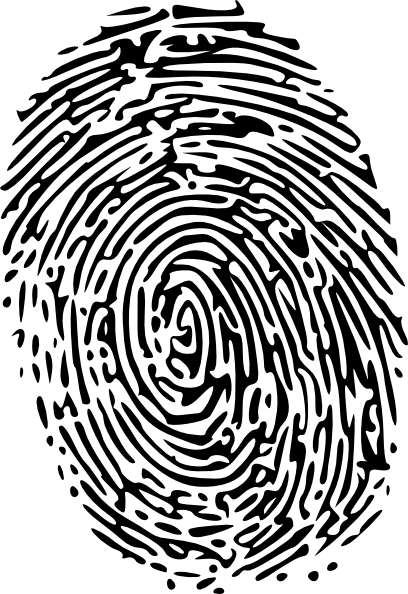
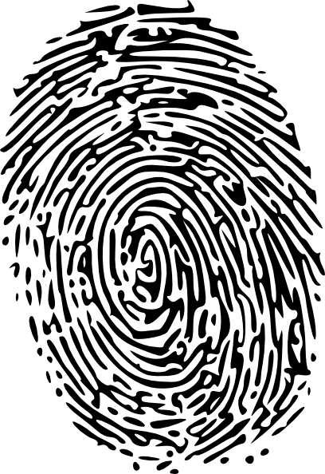

About Fingerprint
Fingerprints, the unique patterns formed by ridges on our fingertips, serve as nature's personalized identification system, forever linking us to our individuality and leaving an indelible mark on the world of forensic science.
Minutiae Points
The features resulting mainly from ridge endings and bifurcations.
Ridge Patterns
Contribute to the distinctiveness of individual fingerprints.
Core
Central reference point that defines the internal structure of a fingerprint.
Delta
Specific point in a fingerprint where ridges diverge.